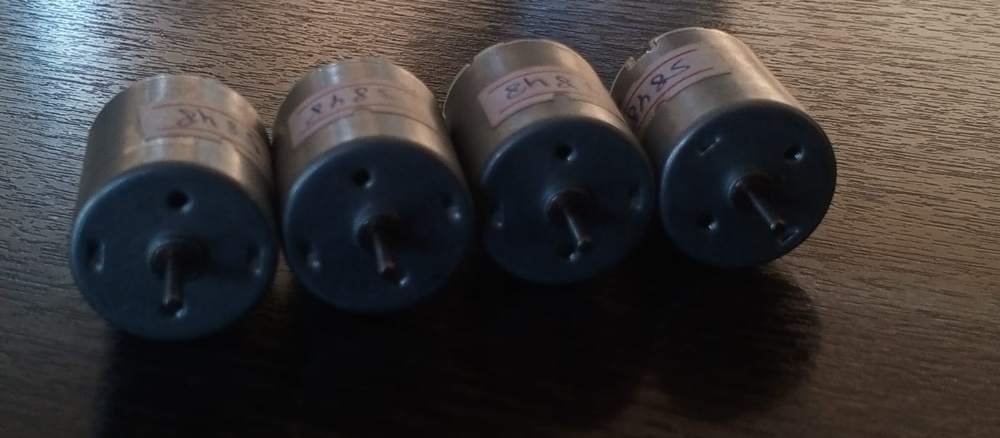
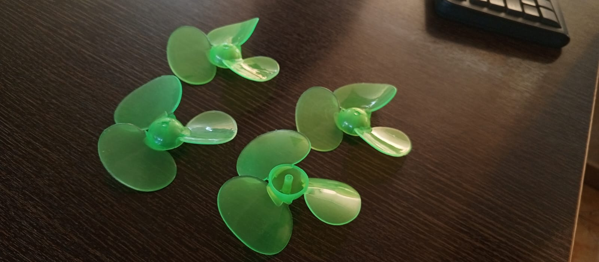
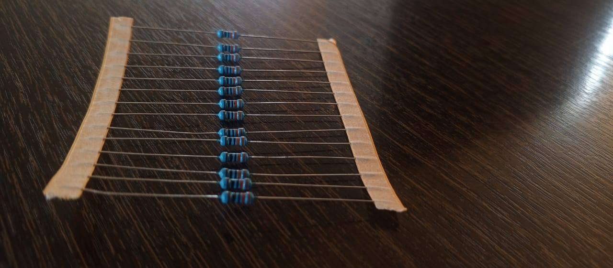
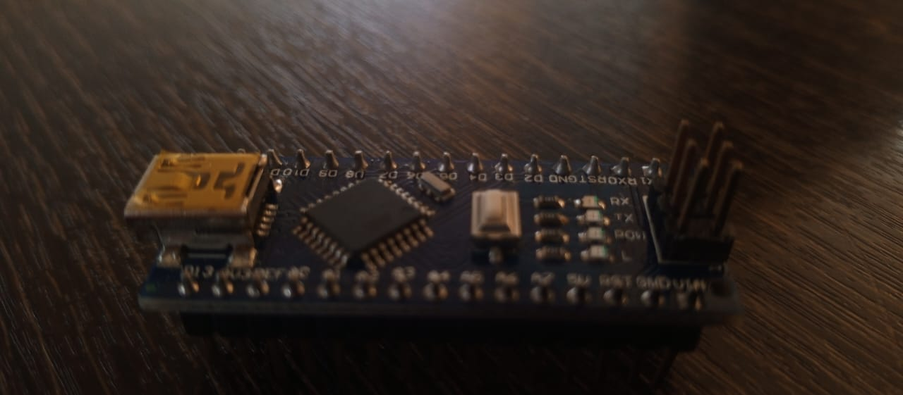
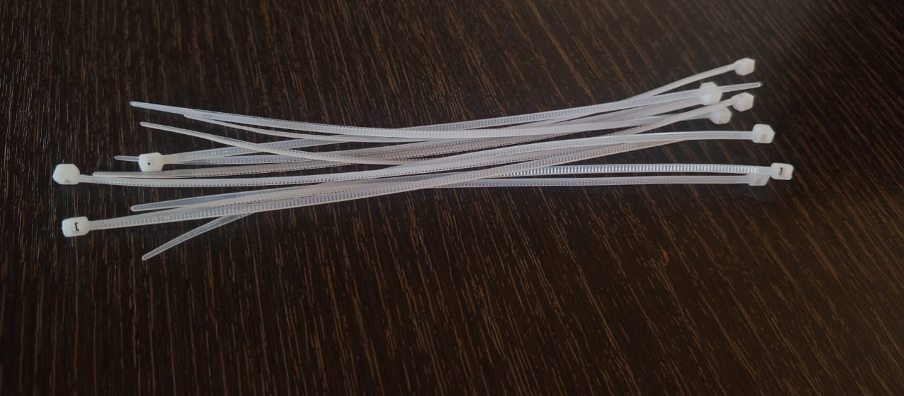
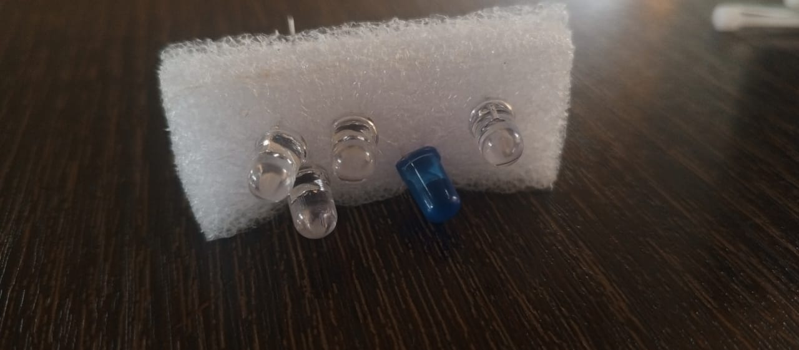
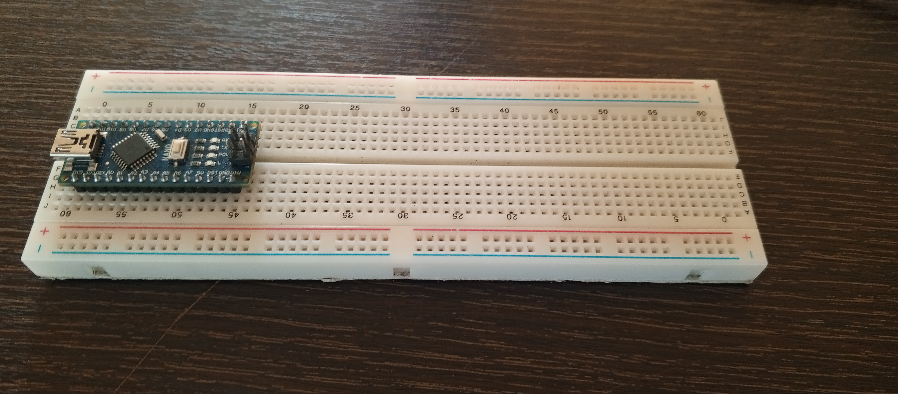
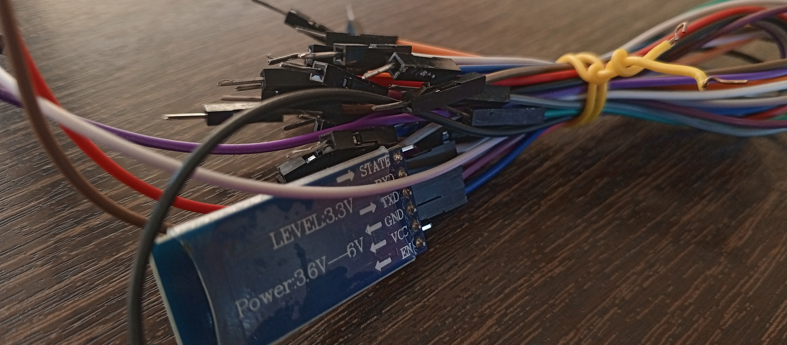
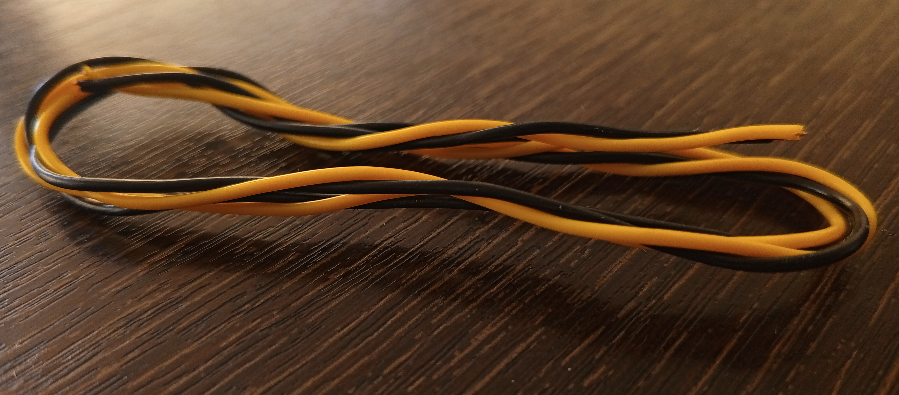
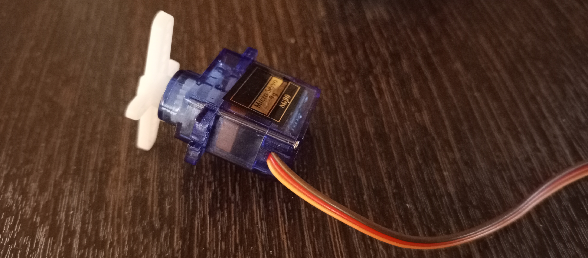

MATERIALES UTILIZADOS
Motores de 12V
Definición: Un motor de 12 voltios (12V) es un motor eléctrico que opera con una alimentación de corriente continua (DC) de 12 voltios. Estos motores son ampliamente utilizados en diversas aplicaciones gracias a su tamaño compacto, eficiencia y facilidad de uso.
Módulo Bluetooth

Definición:Es una tecnología que actúa como una interfaz que ayuda a la conexión inalámbrica Bluetooth de bajo consumo de dos dispositivos y establece un protocolo para la comunicación de datos entre los dispositivos.
Aspas para motores de 12V:
Definición:Son las palas o hélices que se conectan a los motores de 12V para convertir la energía mecánica en energía eléctrica a través de la energía eólica.
Resistencias:
Definición:Son componentes electrónicos que oponen resistencia al flujo de corriente eléctrica, utilizados para regular la tensión y la corriente en el circuito.
Arduino Nano:
Definición: Es una placa de desarrollo electrónica basada en el microcontrolador ATmega328P, utilizada para crear prototipos y proyectos electrónicos, como el control de la alarma y la comunicación con el módulo Bluetooth.
Correas de plástico:
Definición: Son materiales utilizados para sujetar o unir componentes, como las aspas de los motores o la maqueta de casa.
Focos LED:
Definición: Son dispositivos electrónicos que emiten luz a través de diodos emisores de luz (LED), utilizados para iluminar la maqueta de casa.
Protoboard
Definición: Es una placa de pruebas electrónica utilizada para crear y probar circuitos electrónicos de manera temporal, antes de soldarlos en una placa de circuito impreso.
Jumpers
Definición: Son cables o conexiones utilizados para unir componentes electrónicos en un circuito, permitiendo la conexión y desconexión fácil de los componentes.
Cable de Timbre
Definición:Son cables utilizados para conexiones simples entre los componentes.
Vivienda

Definición:Esta vivienda de madera está diseñada con un techo inclinado que no solo aporta un estilo moderno, sino que también incluye las conexiones necesarias para instalaciones eléctricas
Servomotor
Definición:Este componente es escencial para poder abrir y cerrar ventanas al momento de que esta reciba la señal de forma automática o manual.
Detector de humedad/lluvia

Definición:Este compenente detector de lluvia se usa para detectar la lluvia o humedad en un área específica de la vivienda con la cual se activara el mecanismo del tendero para guardar ropa.
Power Bank

Definición:Es una batería portátil que se utiliza para almacenar energía, la cual puede ser utilizada para recargar dispositivos electrónicos o alimentar sistemas, como las hélices de ciertos dispositivos, cuando no hay acceso a una fuente de energía eléctrica.